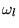

これまでのベイズ識別法の説明では誤り率最小という条件を使用してきたが、 厳密には損失量という概念を使い、 条件付危険量の最小化を要求する。
損失量は本来カテゴリに属するパターンxを、 誤って別のカテゴリ に属すると決めてしまった時に生じる量である。 一般にあるxを であると決めた時の条件付危険量 は式(3.6)で与えられる。 本来のベイズ識別法は、これを最小とするカテゴリ名を出力する。 すなわち、
この時、決定が正しければ損失0、誤りならば1とする単純なモデルの場合には、 前項まで使ってきたベイズ識別法とおなじものになる。